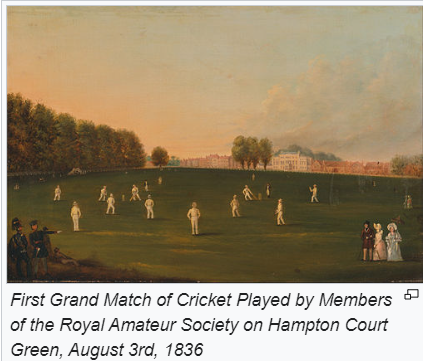
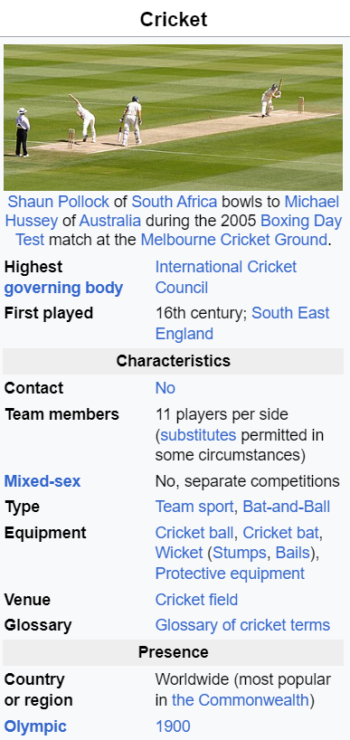

HistoryCricket is one of many games in the "club ball" sphere that involve hitting a ball with a hand-held implement; others include baseball (which shares many similarities with cricket, both belonging in the more specific bat-and-ball games category[2]), golf, hockey, tennis, squash, badminton and table tennis.[3] In cricket's case, a key difference is the existence of a solid target structure, the wicket (originally, it is thought, a "wicket gate" through which sheep were herded), that the batter must defend.[4] The cricket historian Harry Altham identified three "groups" of "club ball" games: the "hockey group", in which the ball is driven to and from between two targets (the goals); the "golf group", in which the ball is driven towards an undefended target (the hole); and the "cricket group", in which "the ball is aimed at a mark (the wicket) and driven away from it" It is generally believed that cricket originated as a children's game in the south-eastern counties of England, sometime during the medieval period.[4] Although there are claims for prior dates, the earliest definite reference to cricket being played comes from evidence given at a court case in Guildford in January 1597 (Old Style, equating to January 1598 in the modern calendar). The case concerned ownership of a certain plot of land and the court heard the testimony of a 59-year-old coroner, John Derrick, who gave witness that:[6][7][8] Being a scholler in the ffree schoole of Guldeford hee and diverse of his fellows did runne and play there at creckett and other plaies | v  |
|---|
|
This article is about the sport. For the insect, see Cricket (insect). |
|
|---|---|
|
Cricket is a bat-and-ball game that is played between two teams of eleven players on a field at the centre of which is a 22-yard (20-metre) pitch with a wicket at each end, each comprising two bails balanced on three stumps. Two players from the batting team (the striker and nonstriker) stand in front of either wicket holding bats, with one player from the fielding team (the bowler) bowling the ball towards the striker's wicket from the opposite end of the pitch.he striker's goal is to hit the bowled ball with the bat and then switch places with the nonstriker, with the batting team scoring one run for each exchange.Runs are also scored when the ball reaches or crosses the boundary of the field or when the ball is bowled illegally. The fielding team tries to prevent runs from being scored by dismissing batters (so they are "out"). Means of dismissal include being bowled, when the ball hits the striker's wicket and dislodges the bails, and by the fielding side either catching the ball after it is hit by the bat but before it hits the ground or hitting a wicket with the ball before a batter can cross the crease in front of the wicket. |
 |